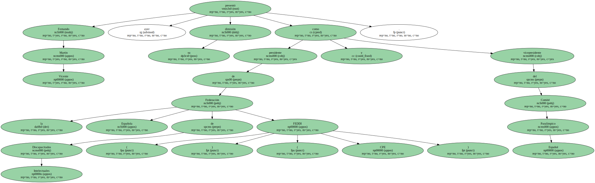
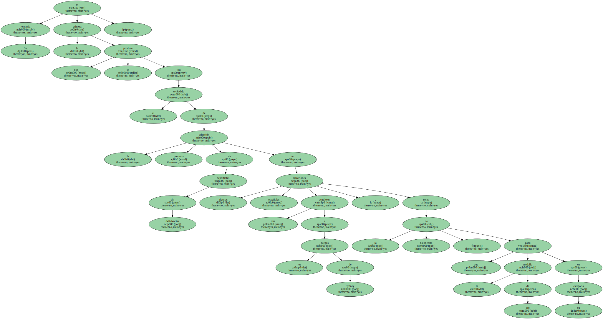
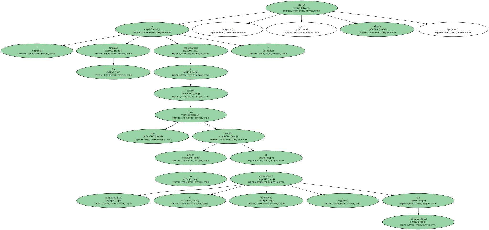
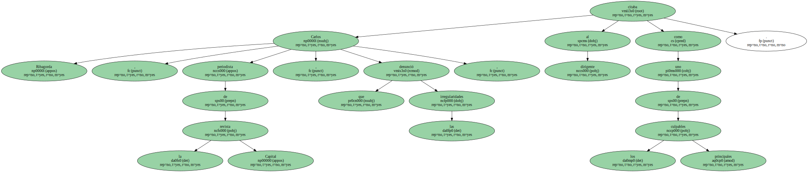
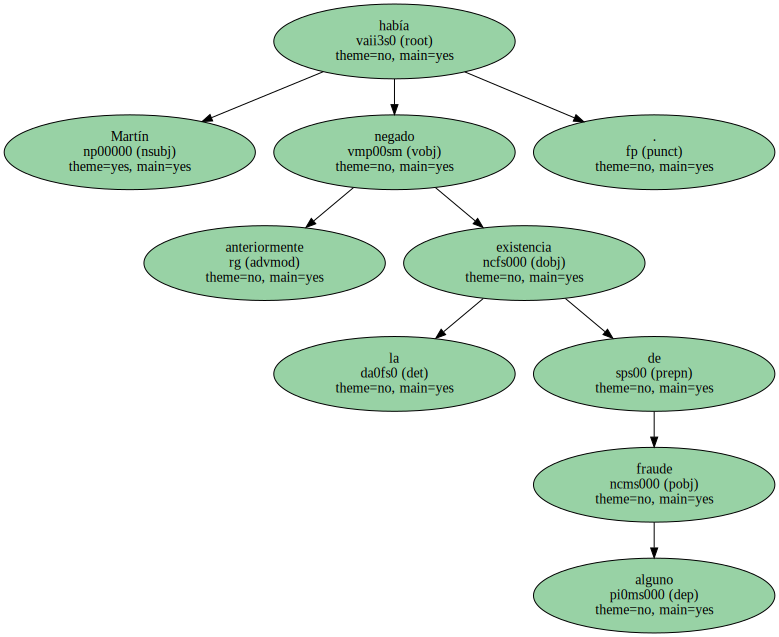
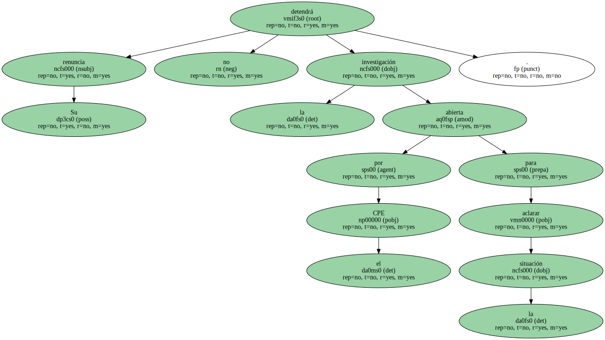
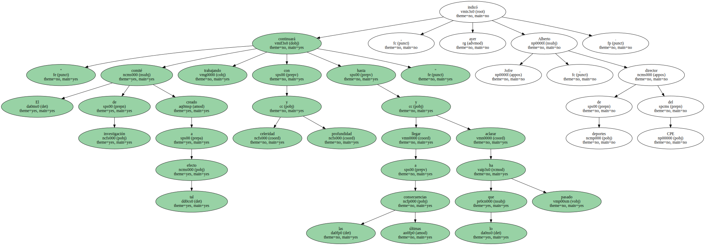
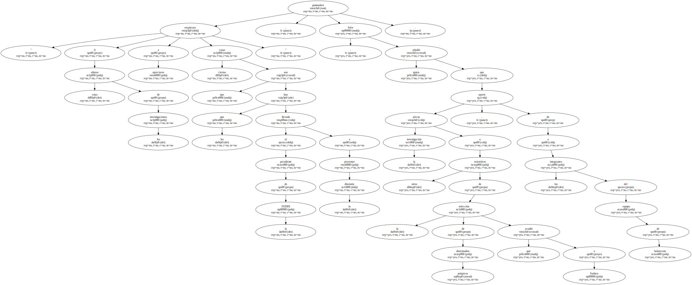

Fernando Martín Vicente presentó ayer su dimisión como presidente de la Federación Española de Discapacitados Intelectuales ( FEDDI ) y vicepresidente del Comité Paralímpico Español ( CPE ).
Su renuncia es la primera que se produce tras el escándalo de la presunta selección de deportistas sin deficiencias en algunas selecciones españolas que acudieron a los Juegos de Sydney , como la de baloncesto , que ganó la medalla de oro en su categoría.
" La dimisión es consecuencia de errores que han tenido su origen en disfunciones administrativas y operativas , sin intencionalidad " , afirmó ayer Martín.
Carlos Ribagorda , periodista de la revista Capital , que denunció las irregularidades , citaba al dirigente como uno de los principales culpables.
Martín añadió también que se iba ante " las denuncias sobre presuntas irregularidades observadas en la cualificación y selección de algunos deportistas españoles con discapacidad intelectual que participaron en el equipo de baloncesto de Sydney ".

La dimisión , de carácter irrevocable , vino acompañada del reconocimiento de " errores en la valoración psicológica de alguno de los componentes de la selección de baloncesto ".

Martín había negado anteriormente la existencia de fraude alguno.
Su renuncia no detendrá la investigación abierta por el CPE para aclarar la situación.
" El comité de investigación creado a tal efecto continuará trabajando con celeridad y profundidad hasta llegar a las últimas consecuencias y aclarar lo que ha pasado " , indicó ayer Alberto Jofre , director de deportes del CPE.
" A estas alturas de las investigaciones empiezan a apreciarse ciertas cosas que son las que han llevado al presidente de la FEDDI a presentar la dimisión " , puntualizó Jofre , quien añadió que la investigación afecta a otros miembros de la selección de disminuidos psíquicos que acudió a Sydney , aparte de a los integrantes del equipo de baloncesto.
